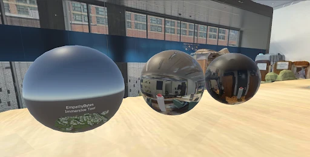

Virtual Reality Museum
at Georgia Tech
At Empathy Bytes, we are creating an immersive Virtual Reality Museum that brings the Georgia Tech Archives to life. This innovative project allows users to explore and learn about significant artifacts from the school's history — such as an official 1996 Atlanta Olympics Torch, Buzz's Converses from 1988, and a 1937 rat cap.
Using advanced photogrammetry and hand-modeling techniques, our team digitally preserves these items, ensuring their legacy is accessible to all. Designed to mimic the experience of a campus tour, the VR Museum provides a unique opportunity for the Georgia Tech community to deepen its connection to the school's rich past, regardless of physical location.


Georgia Tech's physical archives are inaccessible to remote students, alumni, and people with mobility limitations. How might we preserve and democratize access to campus history through immersive technology?
Understanding who we're designing for
From a UX perspective, our goal was to design an experience that felt both intuitive and emotionally resonant. To ground our approach in authentic user needs, we conducted interviews with students, alumni, and campus tour guides to uncover which artifacts and stories held the deepest meaning.
A key insight was the strong emotional connection many participants felt toward items symbolizing school spirit and major campus events. Several alumni cited the 1996 Atlanta Olympics as a defining memory — which directly informed our decision to feature the official Olympic Torch in the museum.


Artifacts tied to landmark events (1996 Olympics, graduation rituals) resonated most strongly across all user groups.
Remote alumni and students with disabilities had no equivalent way to experience campus history in person.
Users wanted stories behind the artifacts, not just 3D models — context transformed viewing into meaning-making.
What we learned from real users in VR
Throughout the semester, we held regular demo sessions to conduct user and usability testing. To simulate real-world use, we provided minimal instructions and observed how participants naturally interacted with the virtual museum. We tracked key metrics such as how often users successfully picked up objects, moved within the space, and navigated between locations.
Many first-time VR users felt disoriented, struggled with basic actions like grabbing and teleporting, and often hesitated before attempting interactions.
Users didn't always realize which objects were interactable, leading to frustration and trial-and-error attempts.
Participants interacted with the same object in different ways (e.g., holding a viola by the neck, body, or bow), highlighting the need for flexible gesture recognition.
As frequent VR users ourselves, we underestimated how steep the learning curve was for novices — revealing a gap between our mental models and those of new users.
// we further synthesized and summarized our full UX research. View full research report →
Bridging the gap between experts and novices
Based on user testing insights, we recognized that our initial design unintentionally reflected our perspective as experienced VR users rather than the needs of first-time users. These findings highlighted that our system needed to be more discoverable, forgiving, and flexible.
Introduced shader graphs to highlight interactable objects, helping users quickly identify what they could engage with.
Designed a gesture-based teleportation system using Locomotion Interaction, making movement feel more natural and reducing confusion.
Expanded the gesture detection system to recognize a wider variety of hand positions and object interaction styles.
Adjusted onboarding by subtly guiding users through core interactions without overwhelming them with instructions.


Measurable improvements through iteration
After several rounds of iteration, we saw clear improvements in both usability and user confidence. This progress was the result of a highly iterative and research-driven process — testing multiple design approaches, running trial-and-error experiments, and continuously comparing solutions against user feedback.
Users picked up, moved, and teleported between locations more consistently with fewer errors.
First-time users navigated the museum with significantly less facilitator assistance.
Participants engaged more willingly, experimenting with objects instead of hesitating.
The system worked smoothly for both novice and experienced VR users, creating an inclusive experience.
With controls feeling natural, users shifted their attention to the artifacts and stories themselves — fulfilling our goal of creating an intuitive, emotionally resonant museum experience.
Thank you to our wonderful team members